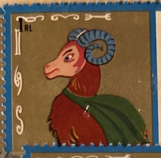
| SOURCE | TITLE| IMAGE MATCH | click to source page |
| Stamps of India | My Stamp Issues | 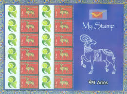 |
| Goat Stamp - China - Not Sure of the Year : r/goats | 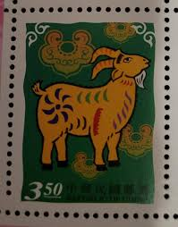 | |
| Goat relief, me, carved joint compound on wood, 2022 : r/Art | 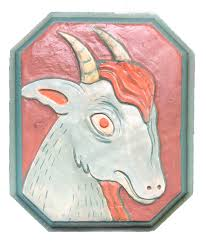 | |
| eBay | Vintage Wooden Astrology Sign Capricorn Hanging Wall Plaque Excellent Pre Owned | eBay | 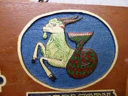 |
| The Sun In Itself Called “Ra” Meaning “The Seer” By The Ancient Egyptians Is A Form Of Fire… The Ancient Egyptians Called Their Sun Deity “Amon Ra” The Name Amon Ra Is | 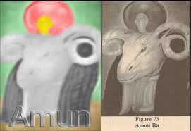 | |
| Find Your Stamps Value | Value of ram usa 17 stamps | 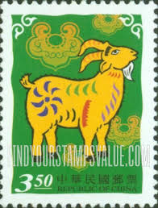 |
| In search of a goat : r/DisneyPins | 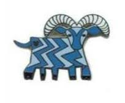 | |
| Mercari | Vintage 1969 Donald Art Co 11x9 Lithograph | Mercari | 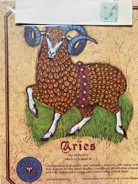 |
| Medieval Bestiary | Medieval Bestiary : Beasts : Ram | 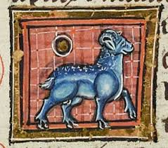 |
| Medieval Bestiary | Medieval Bestiary : Beasts : Wether | 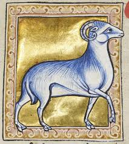 |
| eBay | SINGAPORE 2023 HOROSCOPE SERIES I 1ST LOCAL FULL SHEET OF 10 STAMPS IN MINT MNH | eBay | 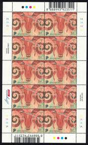 |
| Free stamp catalogue | Stamps with the theme Snakes - Freestampcatalogue.com - The free online stampcatalogue with over 500.000 stamps listed. | 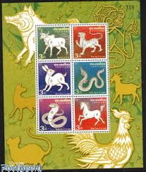 |
| hannahcharltonarts.com | Bestiary — HANNAH CHARLTON | 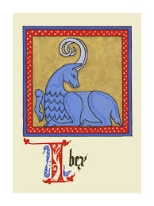 |
| Sheep or Goat Stamp- from Ukraine - 2013 : r/sheep | 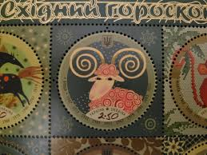 | |
| Discover 120 scientific illustrations in Islamic manuscripts الرسوم العلمية فى المخطوطات الإسلامية and islamic art ideas | illuminated manuscript, islamic world, illustrated manuscript and more | 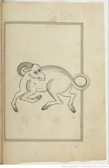 | |
| italianderutapottery.com | Italian Ceramic Zodiac Tiles : Handcrafted Italian Ceramics | 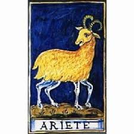 |
| eBay | Thailand Chinese Near Year Zodiac 2008 Lunar Dog Pig Horse Goat Monkey (ms) MNH | eBay | 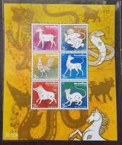 |
| eBay | China ROC - Taiwan 2002 (2736a) Mint never Hinged | eBay | 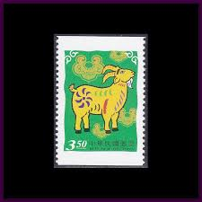 |
| eBay | CHINA 2015 -1 Zodiac 3v Special New Year of RAM Stamps 羊 | eBay | 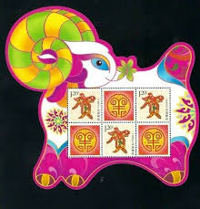 |
| eBay | CANADA Sc #2449. SIGNS of the ZODIAC - THIS MAXICARD CELEBRATES ARIES | eBay | 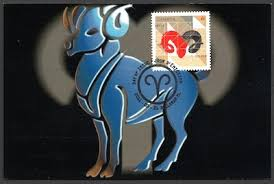 |
| Rawpixel | Vintage Ram Images | Free Photos, PNG Stickers, Wallpapers & Backgrounds - rawpixel | 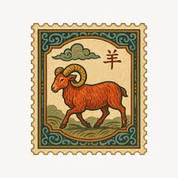 |
| Himalayan Art Resources | Himalayan Art: Item No. 12411 | 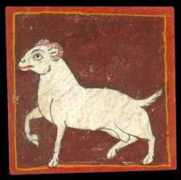 |
| Natalia Kuna | The 12 Signs of the Zodiac - NATALIA KUNA | ALIGNING YOU ON YOUR SPIRITUAL PATH | 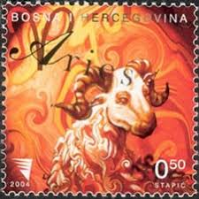 |
| postagestamps.gov.in | Postage Stamps:: Postage Stamps,Stamp issue calender 2014, Paper postage, Commemorative and definitive stamps, Service Postage Stamps, Philately Offices, Philatelic Bureaux and counters, Mint stamps | 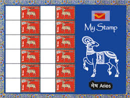 |
| Todocolección | china mao tse -tung 1950. used. chine. - Buy Antique stamps of China on todocoleccion | 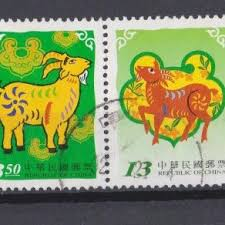 |
| TGW.cz | 2003) Mi.No. 349 ** - Czech Republic - Zodiac Sign Skopec | 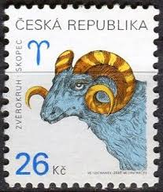 |
| Alamy | Tarot Cards - Minichiate Deck. Aries Stock Photo - Alamy | 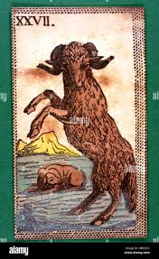 |
| Aries Stone made by Local artist for sale! : r/gso | 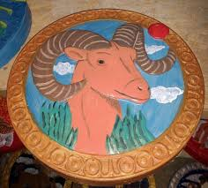 | |
| Etsy | Aries Zodiac Sign Ceramic Constellation Map Handpainted Tile Personalized Gift Zodiac Signs Original Artwork Horoscope Astrological Chart - Etsy | 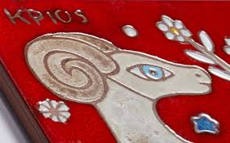 |
| eBay | G 1267 C&C 3432 New Magnetized Telephone Card Italy Horoscope Goat | eBay | 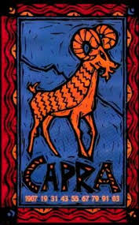 |
| IGNCA | Indira Gandhi National Centre for the Arts | bgnjf0600002 | IGNCA | 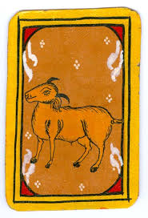 |
| Robin Henschel (robinhenschel) - Profile | Pinterest | 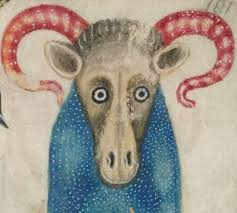 | |
| WordPress.com | Mommy – Why does that goat have 5 legs? | saddlesore swanson | 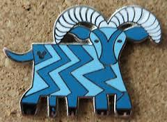 |
| Shutterstock | 2,384 Ram Side View Royalty-Free Images, Stock Photos & Pictures | Shutterstock | 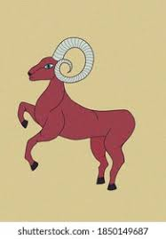 |
| YouTube | CHRIS SMITH - SECOND HAND SMOKE - YouTube | 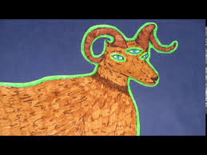 |
| Gloucestershire Pubs | Fleece Inn / Kites Nest, 106 Bath Road, Lightpill, Stroud GL5 3TJ - Gloucestershire Pubs | 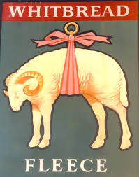 |
| eBay | Heals London England 1940's Atomic Gray Pottery ZODIAC Bowls (6) VGC | eBay | 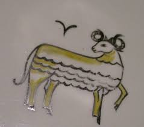 |
| WordPress.com | Our 5 Legged Goat Disney Pin | Our Magical Disney Moments | 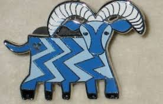 |
| eBay | Thailand 2009-2014 Chinese Animal Zodiac Sign Stamp Sheet MNH | eBay | 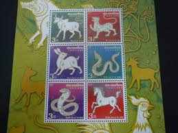 |
| eBay | Plate Block of 4 stamps - Scott 4138 - 17 cent - Bighorn Sheep - 2007 - MNH | eBay | 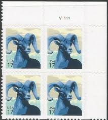 |
| GlassPass | ROBERTSON GLASS MOODMAT *BRAN... | Shop Moodmat on GlassPass | 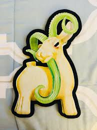 |
| Aries | 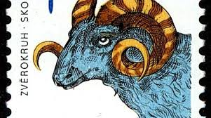 | |
| Book of Hours, Ram, with situla, sprinkling holy water with an aspergillum, Walters Manuscript W.102, fol. 80r detail | 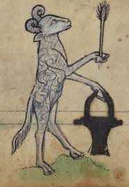 | |
| АО «Марка | Signs of the Zodiac | 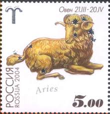 |
| Ranker | The Creepiest Thing About You, According To Your Zodiac Sign | 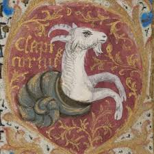 |
| MARY YOUNG (itsmaryyoung) - Profile | Pinterest | 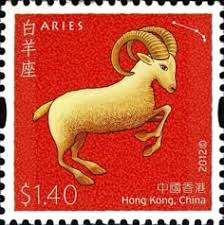 | |
| eBay | 2003 Tuvalu Sc# 906 - 75¢ s/s. Chinese Lunar Zodiac Goat, Ram - MNH Cv$12 | eBay | 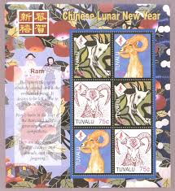 |
| Art.com | Patrizia La Porta Wall Art: Prints, Paintings & Posters | Art.com | 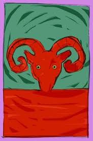 |
| Colnect | Stamp: Capricorn (Somalia(Zodiac) Mi:SO 785,Yt:SO 677 📮 | 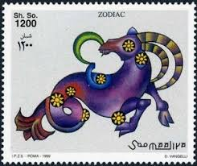 |
| Bomarka | Stamp "Aries" (Czech Republic, 2003) | BOMARKA | |
| Kathy Crabbe | Aries Full Moon: I Am the Divine Warrior — Kathy Crabbe | |
| eBay | Vintage Hand Painted Aries Zodiac Wood Plaque 9.5” Spain | eBay | |
| 4StampSales | US Stamp - 1982 20c Bighorn Sheep - Booklet of 20 Stamps #BK142 | |
| Aaron Basha | Aries Zodiac Charm (March 21 - April 19) – AB CORP | |
| Syracuse University | Results – Advanced Search Objects – eMuseum | |
| eBay | VTG 1970's Zodiac ARIES decoupage wall plaque Wooden | eBay | |
| Feelastro | Sun in Aries - | |
| PicClick UK | TUVALU 1979 YEAR Of The Child .Set Of Four In Sheetlets Of Four.mnh £1.17 - PicClick UK | |
| commonwealthstamps.com | Maldive Islands 1974 Signs of the Zodiac SG 525 Fine Mint | |
| Etsy | This item is unavailable - Etsy |